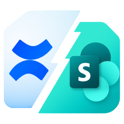

Licenses and source
This extension includes open-source document conversion and form libraries. Conversion runs locally in Chrome. Copyright, license and corresponding-source information is available here.
Document conversion
Document reconstruction uses ONLYOFFICE software and CryptPad’s WebAssembly converter. ONLYOFFICE software is copyright Ascensio System SIA and is distributed under GNU AGPL version 3 with its applicable additional notices. The original logo is retained unchanged.
The combined distribution is under GNU AGPL version 3. The original Confluence and SharePoint core retains its MIT copyright and license notice.
Checking source information…
Download corresponding source and build instructions
Project source · Pinned source inventory · Document engine build provenance
Interactive forms on SharePoint
Editable document imports need no custom SharePoint app. Interactive form pages require the SharePoint form companion installed by a site administrator. It runs in the reader's browser with their current SharePoint permissions.
Download the form companion · Installation and response-list permissions
Notices and other libraries
- Complete third-party notices
- ONLYOFFICE AGPL license and engine attribution and modifications
- Original logo source and attribution · CC BY-SA 4.0 graphical asset license
- SurveyJS Form Library is used under MIT; its notices are retained in the bundled form runtime.
This software is provided without warranty, including the applicable upstream disclaimers. Product marks belong to their respective owners; their display does not imply endorsement.